养成策略
每周商店必买攻略
不知道什么该买？萌新们可以参考这个必买攻略，确保自己至少每个该买的商店都逛过了 😀。商店里面其他物品可以按需购买。
| 商店 | 物品 | 刷新频率 | 图标 | 备注 |
|---|---|---|---|---|
| 赛季商店（不肝商店） - 赛季追赶 | 通宝 | 每周刷新 | 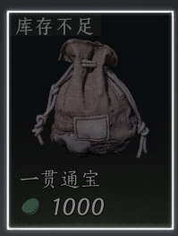 | 长期每周必买 |
| 赛季商店-战斗养成 | 啸玉 （当前阶的叠音材料） | 每周刷新，剩余库存不清空 | 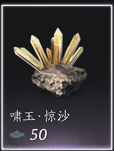 | 长期每周必买 |
| 赛季商店-战斗养成 | 金丝钱袋（通宝） | 每周刷新 | 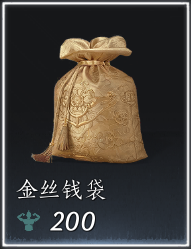 | 清空体力的主要方式 |
| 赛季商店-战斗养成 | 一盒短陌钱 | 每周刷新 | 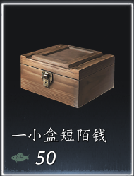 | 后期如果斗蛐蛐，开封跑商的话不需要买 |
| 赛季商店-战斗养成 | 心法箱子 | 每周刷新 | 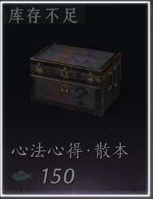 | 长期每周必买 |
| 赛季商店-战斗养成 | 武学心得 | 每周刷新 | 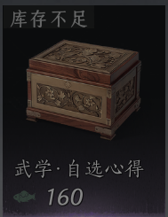 | 长期每周必买 |
| 赛季商店-战斗养成 | 奇术支援箱 | 每周刷新 | 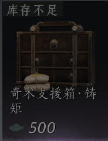 | 不想肝奇术升级 |
| 赛季商店-装备宝匣 | 当前阶的装备匣 | 每周刷新 | 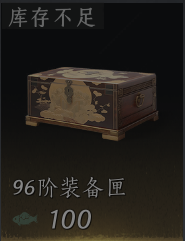 | 么玉充足，缺装备的时候 |
| 赛季商店-金装兑换 | 当前阶的转律石 | 每周刷新 | 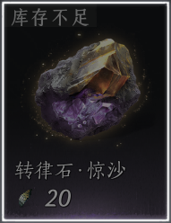 | 长期每周必买 |
| 赛季商店-金装兑换 | 当前阶的金妙音石 | 每周刷新 | 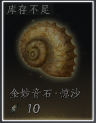 | 长期每周必买 |
| 赛季商店-金装兑换 | 当前阶的金装自选匣 | 每周补货，有库存上限 | 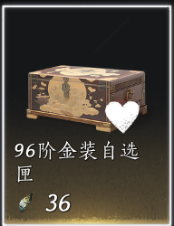 | 能买就买 |
| 赛季商店-营生养成 | 营生手记 | 每周刷新 | 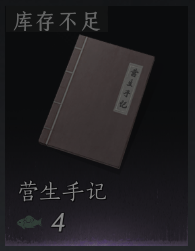 | 能买就买，需要提升悬壶/文士的等级来解锁高阶的药品/符帖来提升战斗能力。 |
| 赛季商店-外观兑换 | 袅袅之音 | 每周刷新 | 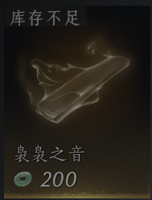 | 度过新手期，买完易水歌之后，可以开始买。 |
| 社交商店-江湖行商店 | 当前阶的止戈定音石 | 每周刷新 | 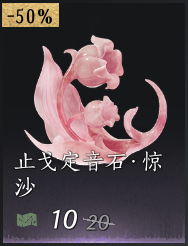 | 按需购买。不玩止戈(pvp)或者百业战可以忽略。 |
| 社交商店-江湖行商店 | 当前阶的止戈变音石 | 每周刷新 | 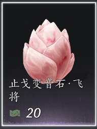 | 按需购买。不玩止戈(pvp)或者百业战可以忽略。 |
| 百业-赤金小铺 | 绕梁之音 | 每月刷新 | 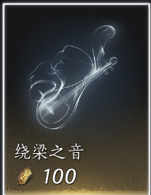 | 不换白不换，可以抽外观。 |
| 传承商店 | 奇术支援箱 | 每周刷新 | 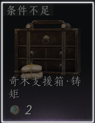 | 长期每周必买 |
| 传承商店 | 当前阶的变音石 | 每周补货，剩余库存不清空 | 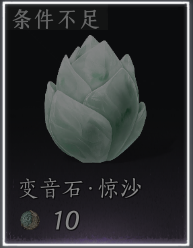 | 长期每周必买 |
| 传承商店 | 心法箱子 | 每周刷新 | 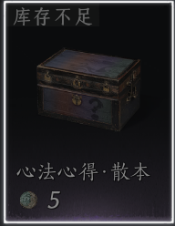 | 长期每周必买 |
| 不错小店 | 通宝 | 每周刷新 | 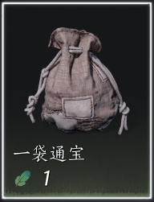 | 缺通宝可以买 |
| 战令商店 | 当前阶的转律石 | 每周刷新 | 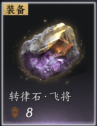 | 长期每周必买。注意看准描述是几阶的，别买错了（痛的教训）。因为战令商店所有转律石都有，乱序的。 |
| 战令商店 | 当前阶的变音石 | 每周刷新 | 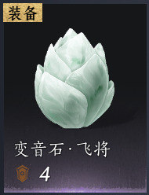 | 同上 |
| 战令商店 | 奇术支援箱 | 每周刷新 | 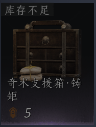 | 长期每周必买 |
| 战令商店 | 不错鸟羽 | 每期战令刷新 | 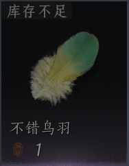 | 建议买。可以到不错小店兑换外观，通宝。 |
| 战令商店 | 等级上限帖 | 每期战令刷新 | 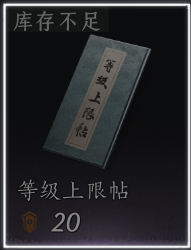 | 只有购买了战令的才有意义买。 |
| 商店->精选->礼包 | 通宝 | 每周刷新 | 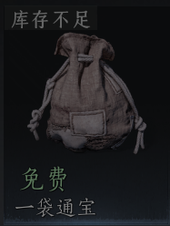 | 免费，记得领 |
| 商店->精选->道具->江湖百珍 | 袅袅之音 | 每周刷新 | 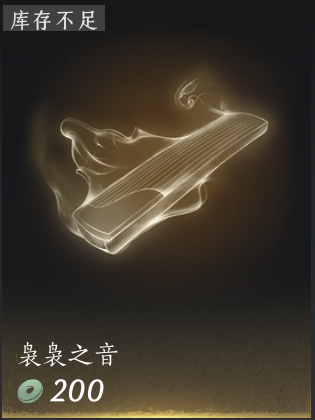 | 度过新手期，买完易水歌之后，可以开始买。 |
| 商店->和鸣->天精商店 | 袅袅之音 | 没有库存限制 | 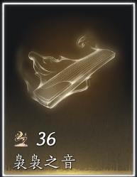 | 需要消耗天精。天精是和鸣消耗袅袅之音抽外观时会获得的。 |
| 商店->和鸣->地华商店 | 袅袅之音 | 每月刷新 | 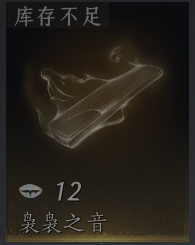 | 需要消耗地华。地华是和鸣消耗绕梁之音抽普通外观获得的。 |
| 商店->和鸣->地华商店 | 折音券 | 每月刷新 | 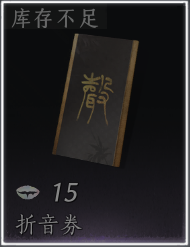 | 需要消耗地华。地华是和鸣消耗绕梁之音抽普通外观获得的。如果你需要用长鸣珠（充值/氪金）买外观，有券在手，花钱更少。 |